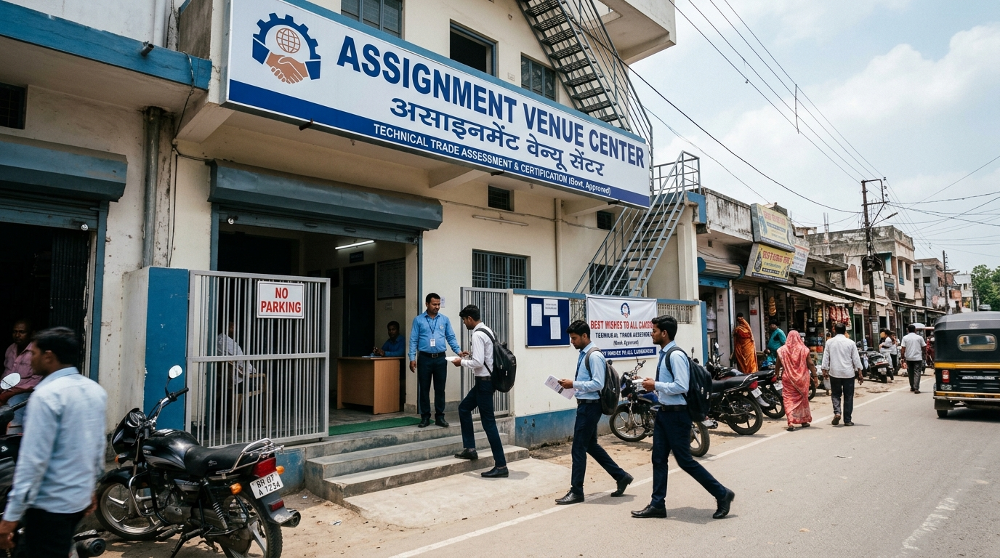
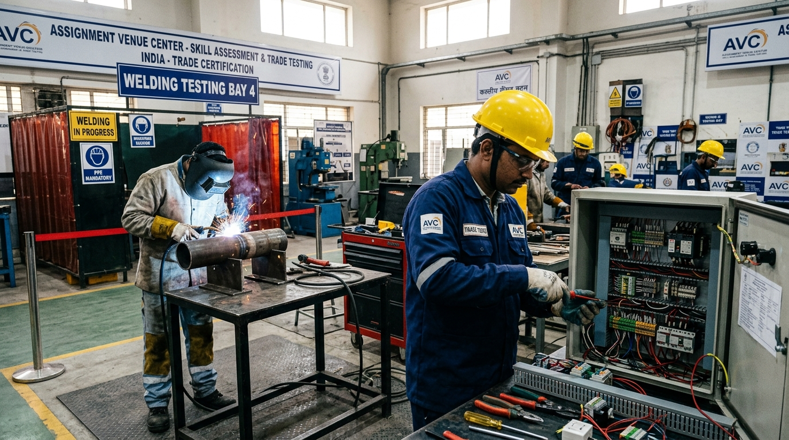
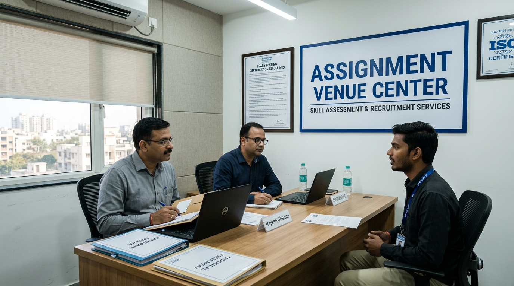

Candidate sourcing
Requirement-led outreach and candidate application collection across relevant job families.
AVC supports employers with requirement structuring, candidate sourcing, profile coordination, interview logistics and recruitment communication from India.
Direct infrastructure and field operations for global EPC contractors, facility management firms, and overseas enterprises.
Requirement-led outreach and candidate application collection across relevant job families.
Organized CV and candidate information sharing against the criteria provided.
Candidate mobilization and communication for online or physical interview sessions.
Stage-based document guidance aligned with the responsible recruitment process.
Structured follow-up around attendance, confirmed selection status and next steps.
Working coordination with employer-side teams and registered Recruiting Agents where applicable.
Purpose-built testing workshops and corporate interview suites designed for high-volume technical screening.

2,500+ sq ft physical facility on Kamtaul Road with 250+ candidate waiting capacity, biometric registration, and high security.

12+ industrial welding booths (TIG/ARC/6G), MEP circuit test rigs, and tool assessment stations for pre-screening verification.

Private AC interview chambers with high-speed fiber internet for live virtual or in-person panel evaluations by overseas employers.
A complete job brief reduces candidate confusion and unnecessary screening.
Company, country, city/project, work location and sector where relevant.
Enough context to brief candidates accurately.
Exact job titles and number of positions required for each role.
Different trades should be separated rather than combined into one vague count.
Experience, skills, qualifications, language or other genuine selection criteria.
Criteria should be job-related and practical to screen.
Salary, duty hours, overtime basis, benefits, accommodation, transport and food terms.
Material employment terms should be clear before candidate mobilization.
Interview method, trade test, required evidence and target schedule.
AVC coordinates logistics; final selection remains with the concerned decision-maker.
Responsible employer / registered Recruiting Agent and visa, emigration, travel and deployment responsibility where applicable.
Regulated overseas recruitment must follow the applicable legal route.
Share the written manpower brief and selection criteria.
Confirm gaps in role, terms, interview method or recruitment responsibility.
AVC coordinates suitable candidate outreach and profile collection.
Shortlisted candidates move into the agreed interview or assessment process.
Selected candidates continue through the responsible authorized recruitment route.
AVC is a sourcing and recruitment-support partner. Final overseas recruitment authorization and regulated processing remain with the concerned employer and/or registered Recruiting Agent.
Operational capabilities, facility booking, and candidate pre-screening protocols.
Candidates undergo comprehensive technical pre-screening at our Darbhanga venue. For welders, this includes 3G/4G/6G test coupons and radiographic inspection. For electricians and MEP workers, it involves practical wiring rigs, multimeter diagnosis, and schematic comprehension. Only trade-tested candidates reach client interview panels.
Yes. Our Darbhanga center features private AC client interview chambers with dedicated 100 Mbps fiber connectivity for HD video interviews via Teams or Zoom. For visiting technical delegates, we provide dedicated interview suites, local transport coordination from Darbhanga Airport (DIB), and workshop testing bays.
AVC operates as an MSME registered Technical Pre-Screening Venue and Sourcing Facility under GSTIN 10AOVPH3197L1ZI. We maintain a strict ₹0 candidate fee policy to comply with international fair recruitment standards. Formal employment contracts, visa sponsorship, and emigration clearance are managed by the principal employer or authorized Recruiting Agents under the Emigration Act 1983.
Send the company/project context, roles, quantity, employment terms, selection method and recruitment route through AVC's structured employer intake.